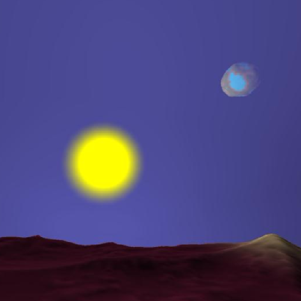

I’m a technical leader and entrepreneur with a PhD in computer science, specializing in rendering, and a proven track record of shipping projects across both the gaming and web3 industries. I bring a deep technical foundation with over a decade of experience in C++ game and engine development, including commercial work with Unreal Engine, and hands-on expertise in smart contract development using Rust. I’ve spent the past 5+ years driving product strategy, technical direction, and project management across interdisciplinary teams. Beyond games, my passion for writing, drawing, music, and dance allows me to bridge the gap between engineering and art, making me a unique asset in creative, multi-disciplinary environments.
About
Languages
English (fluent)
Portuguese (fluent)
Spanish (fluent)
French (basic)
Email
Areas of Expertise
Technical Mastery
10+ years of C++ game development, a PhD in rendering-focused computer science, and a proven record shipping commercial titles using Unreal Engine. Skilled in graphics programming, engine architecture, and smart contract development in Rust. Deeply engaged in blockchain interoperability and cross-chain systems.
Product Strategy
Strategic thinker with 5+ years of experience guiding products from concept to market across games and web3. Strong track record of structuring iterative development roadmaps, minimizing risk, and accelerating user feedback cycles. Adept at aligning technical vision with product goals to maximize impact.
Leadership & Execution
Experienced leader with a unique blend of empathy, clarity, and tactical planning. 5+ years managing interdisciplinary teams across games and crypto, driving delivery through transparent communication, actionable planning, and hands-on execution. Skilled at motivating teams, resolving conflict, and scaling collaboration.
Research Output
Inacio, F. and Springer, J.P., "Reducing Geometry-Processing Overhead for Novel Viewpoint Creation", SIGGRAPH 2015, poster.
Achievements
Awarded the best final year undergraduate project by OpenSoft (software
company) and offered a merit MSc scholarship at NOVA University,
declined to pursue a computer graphics career internationally. (2011)
Won a PhD scholarship at University of Hull. (2012)
Education
2017
2012
PhD in Interactive Computer Graphics
University of Hull
Minor Corrections
High-level expertise in interactive computer graphics and C++ was obtained along with the research skills necessary to the development of a novel structure and techniques associated with it. Fragment-history volumes are sparse, discretised representations of a 3D scene with all the fragments recorded during the rasterisation stage of the graphics pipeline. These structures can be used to reduce the geometry-processing overhead for the creation of novel viewpoints on current graphics hardware. A poster describing the early stages of the research has been presented at SIGGRAPH 2015 .
2012
2011
MSc in Games Programming
University of Hull
Distinction
During this degree, the ability to work under pressure was constantly tested and improved while doing several applications to showcase the understanding of game development fields such as graphics programming, game engines artificial intelligence, physics simulation, project management, networking, concurrency, cross-platform development game design and gameplay mechanics. As a result of a team project, a game engine with several features was also implemented by a team of six students and used to develop a full game.
2011
2008
BSc in Computer Science
NOVA University of Lisbon
16 of 20
This degree provided a high-level understanding of calculus, algebra, physics, logic, databases, artificial intelligence, object-oriented programming and design, software development, compilers, computer graphics and interfaces, datastructures, algorithm analysis, concurrency, networking and operating systems.
Work Experience
Now
2024
Lead Programmer
Offworld Industries
Following the game's acquisition and rebranding, I was brought on to lead Squad 44 as Technical Lead. The project originated from a community modding team and lacked many foundational development practices typical of industry-standard game production. I established critical infrastructure including CI/CD pipelines for both the game and its mod SDK, automated data validation systems, crash reporting workflows, and robust packaging processes for Steam distribution. Due to limited staffing, I also stepped into the roles of project manager and product owner, coordinating an international team of part-time contractors across time zones. I introduced structured workflows using JIRA, release workflows using Perforce, implemented agile task tracking, and helped develop and maintain a strategic product roadmap aimed at improving game accessibility and expanding market reach.
2024
Tech Consultant
Persistence One
I joined Persistence to assess and address challenges around team motivation, communication, and delivery. I identified critical bottlenecks in alignment between the strategy and development teams and provided actionable recommendations to improve collaboration and execution. I coached both the project manager and the lead programmer, who later became CTO, on leadership, communication, and delivery practices. Additionally, I restructured their project management systems by mapping out key epics across multiple products, breaking them down into actionable tasks, assigning ownership, and implementing sprint planning to drive accountability and engagement across the team.
2024
2021
Chief Technology Officer
Cryptech Developments
Led the planning and technical decisions of the company through the development and launch of Neptune Finance. Developed Smart Contracts in Rust for Cosmos and helped set up infrastructure for the web app in TypeScript. Also got placed as Head of Engineering for a project that hired us, where I had to plan an ambitious project by breaking it down into sub-projects and building teams to tackle each one.
2021
2020
Lead Programmer
Offworld Industries
Led the programming team of Squad towards the official release of version 1.0. Planned the Squad roadmap, managed its programmers, introduced sprint planning, and implemented better Perforce development pipelines. Engaged with other leads in the Squad team such as QA, Art, Production, and Design to ensure all goals were met.
2020
2018
Senior Programmer
Offworld Industries
Ragdoll synchronization over the network and mod managing for Squad. Part of an elite team of programmers within the company picked to work on core gameplay modules to be used when creating new games. Personally worked on a team tree module to display and manage teams at different depths, as well as a projectile module that used the Gameplay Ability System to synchronize projectile shooting and trajectories across the network.
2018
2017
Software Engineer
Ososim
Engine programming for Ososim's proprietory engine including the complete development of a skeleton animation system and the cross-platform 3D renderer. Complete autonomy and responsability as the computer games and graphics expert of the company, directly below the Chief Technology Officer. Later worked as interim CTO during the absence of one.
2017
2015
Engine/Render Programmer (2 years)
Frontier Developments
Engine programming for Cobra engine, with a focus on rendering. DX12 port of the rendering system and experience with PS4 and XBox One development. Research and development experience for new rendering, lighting and geometry culling technologies and algorithms. Credited in Elite Dangerous, Planet Coaster and Jurassic World Evolution. Experience with resource compilation and management, including memory management on Elite, internal resource formats overhaul affecting all projects, user-generated content on Planet Coaster, and wind dynamics on Jurassic World. Excellent feedback received, especially concerning autonomy, proactivity, taking responsibility for big tasks and great planning skills. Also good at switching between projects rapidly according to priorities and needs.
2015
2012
Lab Demonstrator
University of Hull
Guiding BSc and MSc students through tutorials and teaching them C++ and Graphics programming.
2011
Private Tutoring
Private lessons for university-level probability and statistics.
Voluntary Work
2016
Brains Edens Game Jam Mentor
Anglia Ruskin University
Mentoring students from all over Europe. Listenning to the game ideas and giving advice of how to make the game fun, how to solve some generic problems and how to keep track of priorities and tasks in order to be able to build a polished game in the limited time available
2015
2014
Departmental Conference Committee (Chair)
University of Hull
Organisation of a departmental poster conference as the chairperson in a team of six volunteering PhD students.
Skills & Competences
Computer Graphics
Smart Contracts
Unreal Engine
Research & Development
Roadmap Planning
Cross-Platform
Physics
Software Architecture
Artificial Intelligence
Concurrency
Networking
Databases
Algorithm Analysis
Compilers
Web Development
Resource Compilation
Proficiency
C++
Rust
Java
C
C#
OpenGL
DirectX 11
DirectX 12
GLSL
HLSL
Cg
Jam
Prolog
Ruby
Python
MySQL
HTML5
CSS3
TypeScript
Platforms
Windows
Cell (PS3)
PS4
XBox One
Linux
OSX
Mobile
Hobbies and Interests
Music and Dance passion, including singing, playing piano, guitar
and ukulele. Semi-professional dancer and teaching experience across multiple
dances including bachata, zouk, kizomba and salsa. Also performed on stage
internationally as part of Daniel and Desiree World Team Project.
Healthy lifestyle through exercising and keeping a balanced diet,
with sports like football and volley for the team spirit and surf for
the meditation. Capoeira for a bit of self-defence, dance, core strength
and stretching. Foosball, or table football, is an addiction!
Avid gamer who likes to try multiple game titles and genres,
engaging in community discussions and beta testing phases. Experienced
knowledge of what the game communities require and want from a game, as
well as a life-long list of ideas for game mechanics and designs.
Portfolio
Neptune Finance
Programmed the initial smart contracts for Neptune on Terra to keep leveraged yield investments from being liquidating by rebalancing. Developed a unique and flexible authorization system in Rust for defining auth groups and assigning them to different transactions in each contract. Contributed and reviewed the development of Neptune's lending market contracts in Rust and also helped set up the NodeJS infrastructure for production.
Squad
Led the programming team of Squad towards the official release of version 1.0. Planned the Squad roadmap, managed its programmers, introduced sprint planning, and implemented better Perforce development pipelines. Engaged with other leads in the Squad team such as QA, Art, Production, and Design to ensure all goals were met. Implemented more realistic ragdolls and synchronization over the network, as well as mod managing. Part of an elite team of programmers within the company picked to work on core gameplay modules to be used when creating new games. Personally worked on a team tree module to display and manage teams at different depths, as well as a projectile module that used the Gameplay Ability System to synchronize projectile shooting and trajectories across the network.
Games at Frontier Developments
Rendering work done for all titles, including support for DX12, XB1 and PS4. Resource compilation and management for Planet Coaster and Jurassic World. Memory management helping on Elite. Research and roadmap planning done for Elite. User-generated content support for Planet Coaster. Wind dynamics for Jurassic World and future projects. Various other work done for all projects from within the engine.
Fragment-History Volumes
Fragment-history volumes are sparse, discretised representations of a 3D scene with all the fragments recorded during the rasterisation stage of the graphics pipeline. These structures can be used to reduce the geometry-processing overhead for the creation of novel viewpoints on current graphics hardware. A poster describing the early stages of the research has been presented at SIGGRAPH 2015. Besides the research output, this was a large project in which a framework was developed for building rendering techniques easily and testing their performance. This framework lets the programmer create new rendering stages by specification, add them to the pipeline and link framebuffers, textures and other resources between stages. There is a XML parser that constructs a scene graph and each node can be changed from within the application at runtime using its assigned name. If activated, the framework can get the performance times for each individual stage of the pipeline submitted and output a statistical log as well as screenshots.
X-Sledding 3000
A game produced by a team of six students as part of the group project of the MSc in Games Programming at University of Hull. We decided to develop our own cross-platform engine from scratch which was considered too ambitious: PC and PS3 support, LUA scripting, developer console, physics and sound powered by bullet and fmod, our own renderer with Cg shader code and support for scenegraphs so that a level editor could be done. The theme for the game given to us was sled racing, but instead of making a simple racing game where you have sleds instead of cars, we decided to create unique gameplay mechanics to create a challenge and some fun. The animals pulling the sled need to be disciplined into following your steering, or else it can be very hard to control the direction of the sled. Also, the more you whip them, the less happy they get, which reflects on their speed. Their energy also decreases over time, which again reflects on the speed. To increase energy and morale, you can give them treats which in turn decrease their discipline. The trick is to balance things, but don't forget you are also playing a racing game! Last but not least, the implemented AI is very effective at controlling the animals and wins easily, but there are also cheats to be used in the developer console!
Snowglobe
OpenGL project at University of Hull for the Real Time Graphics module of the MSc in Games Programming. The water reflects everything, the tree growth is a fractal algorithm, almost everything is bumpmapped, Blinn-Phong shading, spotlights, particle systems, collision of snow flakes and leaves, smooth camera movements (using friction) and seasons. The tree grows randomly different every spring.

Procedural Planets
Final dissertation project for the MSc in Games Programming at University of Hull. Each planet is generated using pseudo-random number generation and a seed number, which could be randomly generated to make a universe of randomized planets. This project shows effective use of chunked level of detail algorithms and Perlin-based ridged multi-fractals for the terrain elevations. It was done in OpenGL and the multi-level blending of textures and colors was done in GLSL using terrain height as a parameter. A simple atmosphere and sun effects were also done in GLSL using spheres as a base mesh. Collision between camera and planets was also implemented.